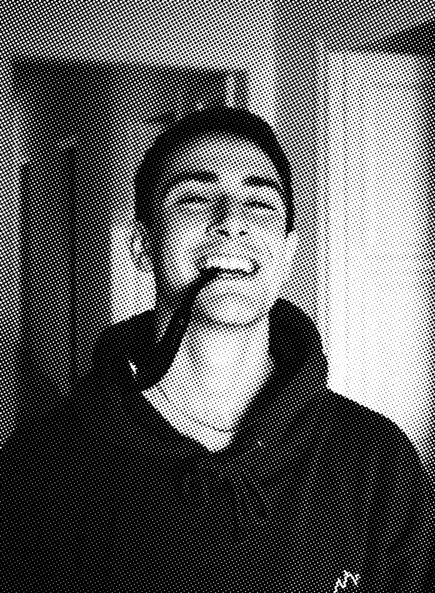

Hey Whats up! Here's a little bit about me...
I'm from Fairfax, Virginia, a small city outside of Washington D.C.. I love skateboarding and have since I was a kid. Filming skate videos, taking photos and board graphics is what initially inspired me to do graphic design.
Inside of graphic design my favorite practices are designing packaging, illustration work, building out brand identities, and various other mediums. I'm never not down to learn how to do something.
I post some of my work on instagram under the name "Quincy" feel free to check it out.
Favorite city is Barcelona, Spain
Favorite type of food is Thai
Favorite beer is Red Stripe
Favorite artist is Steven Harrington